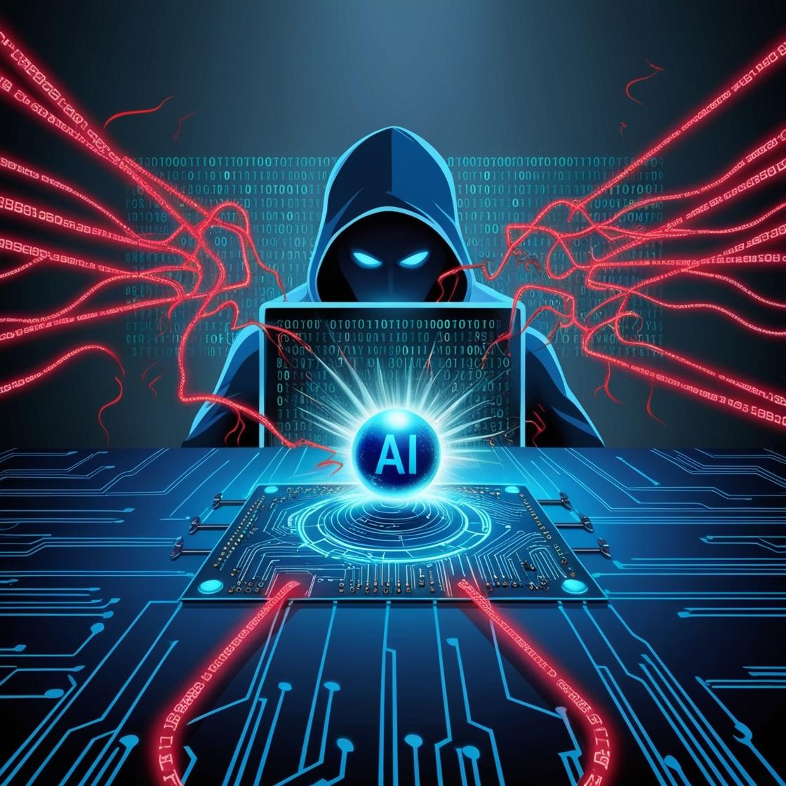

AI-Powered Cyber Attacks
AI-powered cyber attacks have emerged as a significant challenge in the cybersecurity landscape of 2025. Cybercriminals are leveraging artificial intelligence to enhance the sophistication and impact of their attacks, making them increasingly elusive and harder to detect.
Impact of AI-Powered Cyber Attacks
The rise of AI-powered cyber attacks has several implications:
- Automated vulnerability identification and exploitation
- Creation of more convincing phishing schemes
- Real-time adaptation to circumvent security measures
- Increased difficulty in distinguishing between genuine and malicious content
Types of AI-Enhanced Threats
AI is being used to enhance various types of cyber threats, including:
- Deepfake technology for creating realistic fake videos and audio
- AI-enhanced malware attacks
- Advanced social engineering tactics
- Sophisticated ransomware operations
- AI-driven data exfiltration techniques
Combating AI-Powered Cyber Attacks
To address the growing threat of AI-powered cyber attacks, organizations and cybersecurity professionals are adopting various strategies:
- Investing in AI-driven security solutions
- Implementing robust AI governance platforms
- Enhancing threat detection and response capabilities
- Adopting stronger forms of multi-factor authentication (MFA)
- Implementing zero trust architecture
Learn more about cybersecurity threats in 2025